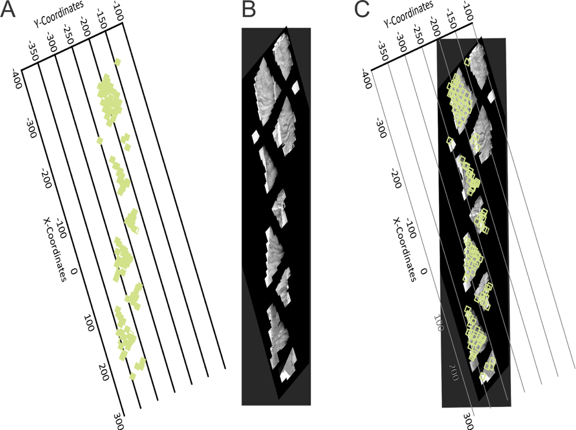

- Story about Size-Biased Data
- Scientific Background for Mitochondria
- Goals for this project:
- Whether Properties of mitochondria are different by locations.
- Suggestions on sampling scheme for future research.
- How Size-Biased Mitochondria Data came from? (Sampling Process)
- Simulation Study
- Permutation Hypothesis Test and Boostrapping Confidence Interval
- Conclusion
- Discussion
Analysis of Size-Biased Mitochondria Data

Advisor: Aaron Rendahl
Overview
Story about Size-Biased Data


Scientific Background for Mitochondria

Goals for this project:
- Whether Properties (area, perimeter, circularity and aspect ratio) of mitochondria are different by locations (proximal, middle and distal end).
- Suggestions on sampling scheme for future research.
Sampling Process - 1
- A young muscle fiber cell was magnifired to 166 different images by using Transmission Electron Microscope (TEM).
- Those falls in " { " are defined as beging in Proximal end, in " [ " are being in Distal end, and the rest are being in Middle part.

Sampling Process - 2
- For each location, divide images into two groups: Subsarcolemmanl and Interfibrillar group.
- In each group, randomly pick one image.
Sampling Process - 3
- In each image, randomly pick 20 mitochondria.
- Generate a list of random coordinates.
- Pick the mitochondria whose area in the photo includes one or more generated coordinates.
Raw Data
Problems
- It is not random sample.
- The larger mitochondria are easier to be picked in our sample.
- It is size-biased!
Goals for this project:
What is the appropriate estimator for the size-biased data?
A: Simulation Study.Whether Properties (area, perimeter, circularity and aspect ratio) of mitochondria are different by locations (proximal, middle and distal end).
A: Permutation Test and Boostrapping Confidence Interval.Suggestions on sampling scheme for future research.
A: Based on the Simulation Study.
Data Exploration:
- Area \(({\mu m}^{2})\):
The area occupied by a mitochondrion in an image. - Perimeter \((\mu m)\):
The length of the boundary of a mitochondrion in an image. - Circularity:
Circularity is equal to \(\frac{4 \pi Area}{Perimeter^2}\).
(Measuring the resemblance of a mitochondrion to a circle. The range of circularity is between 0 and 1. 1 means a perfect circle.) - Aspect Ratio:
Aspect Ratio is equal to \(\frac{Length}{Width}\).
(If \(AR \leq 2\), it is considered short; if \(2 < AR \leq 4\), intermediate; if \(AR > 4\), long.)